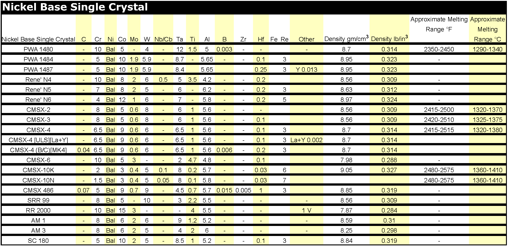
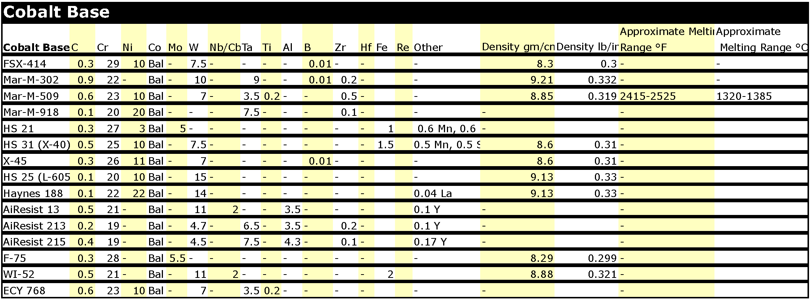
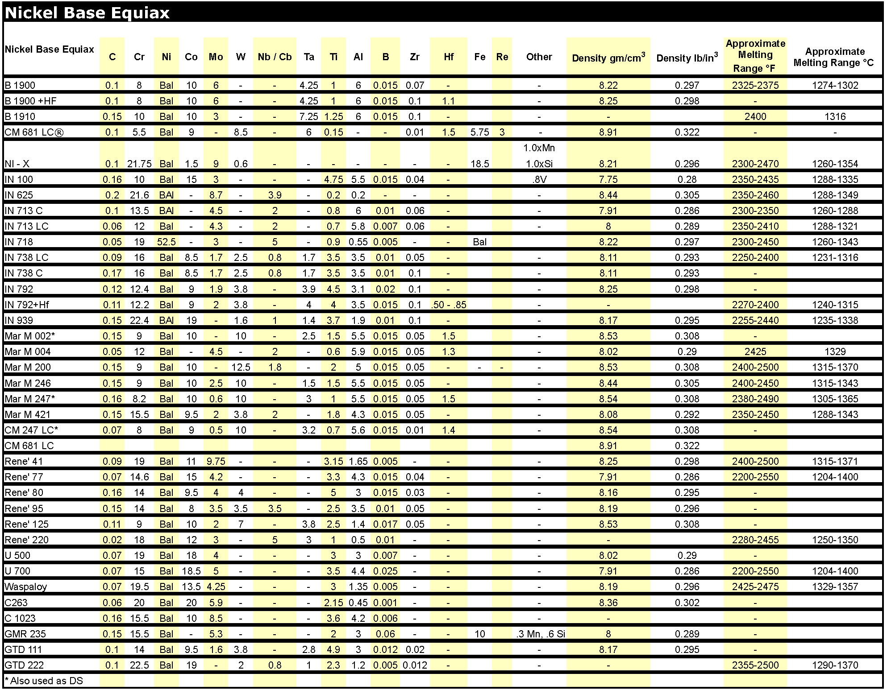
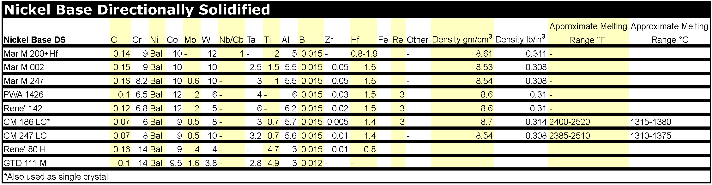

Our firm purchases virtually any Rhenium bearing materials, including industrial waste, scrap, residues and grinding sludge, concentrates and by-products, as well spent reforming catalyst. Most of the recycled Rhenium comes from
Superalloys
.
Superalloys containing Rhenium
   